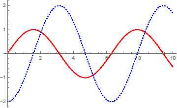
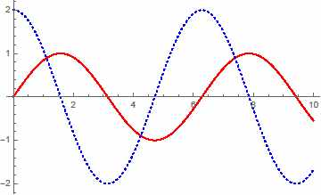
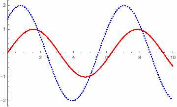
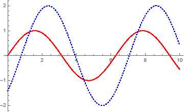

해설 5
단계 1 예시답안
1) 길이 \(l\) 도선안에 있는 총 전하의 로렌츠 힘 \(F = QvB\)
전류의 정의: \(I = \frac{Q}{\Delta t} = \frac{Q}{l/v} \Rightarrow F = BIl\)
2)
i) 돌림힘의 크기:
\[\begin{cases} \text{오른쪽 } \tau_R = \frac{l}{4}BIl \\ \text{왼쪽 } \tau_L = \frac{l}{4}BIl \end{cases} \Rightarrow \tau = I\frac{l^2}{2}B.\]
방향은 시계 방향: 즉, 오른쪽 도선은 아래로, 왼쪽 도선은 위로 힘을 받는다.
ii) 도선이 반 바퀴 돌때마다 코일의 전류의 방향을 바꾸어 주는 장치를 이용하면 계속 회전하게 할 수 있다.
단계 2 예시답안
빨간 실선: 전압, 파란 점선: 전류
i) \(R = C = 0\)일 때 (순수 인덕터):

ii) \(R = L = 0\)일 때 (순수 축전기):

iii) \(C\)와 \(L\)의 크기에 따라서 전류의 위상이 전압보다 빠를 수도 있고 느릴 수도 있다.


단계 3 예시답안
1) '뮤온이 정지한 계의 관찰자' 입장에서는 A지점에서 벽까지의 거리가 '벽이 정지한 계의 관찰자'에 비하여 짧아 보인다.
2) '벽이 정지한 계의 관찰자': 움직이는 뮤온의 시간이 느리게 가므로 \(\frac{\sqrt{3}}{2}c\)의 속력으로 \(\tau\)초에 갈 수 있는 거리보다 더 멀리에 있는 벽에 도달하여 붕괴할 수 있다.
'뮤온이 정지한 계의 관찰자': 비록 \(\tau\)초 이 후 뮤온이 붕괴하지만 A지점에서 벽까지의 거리가 짧아지므로 벽이 A지점에 도달했을 때 뮤온이 붕괴할 수 있다.